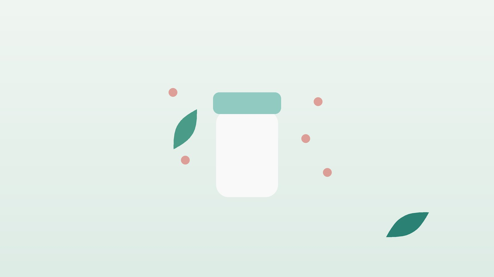

아이가 밤마다 긁느라 잠을 못 잔다면, 소아 아토피 한방 관리

우리 아이 피부, 아토피일까요?
- 팔꿈치 안쪽이나 무릎 뒤 피부가 코끼리 피부처럼 두껍고 거칠다
- 잠들기 전이나 자다가 깨서 몸을 긁는다
- 땀을 흘리고 나면 가려움이 심해진다
- 귓불 아래가 갈라지거나 눈 밑에 주름과 그늘이 진하다
- 겨울이면 온몸 피부가 하얗게 일어난다
- 부모나 형제에게 비염, 천식, 아토피가 있다
이 체크리스트는 진단 도구가 아닙니다. 옴, 접촉피부염처럼 비슷해 보이는 병이 있어 진찰로 구분합니다.
아이들 아토피는 왜 생기고, 나이에 따라 어떻게 달라지나요?
타고난 피부 장벽의 약함, 쉽게 예민해지는 면역 반응, 건조한 공기·땀·집먼지진드기 같은 환경이 겹쳐 생깁니다. 수분은 빠져나가고 자극 물질은 들어와 가려움이 생기며, 긁을수록 장벽이 더 무너집니다.
- 두 돌 무렵부터 초등 입학 전: 얼굴보다 팔다리의 접히는 부위로 자리를 옮기고, 오래 긁은 자리는 가죽처럼 두꺼워지는 태선화가 나타납니다.
- 초등학생: 손목, 발목, 목 뒤가 거칠어지고 땀을 흘린 뒤 가려움이 커집니다.
- 사춘기 이후: 상당수는 가벼워지지만 일부는 얼굴·목 중심으로 이어집니다.
자라며 알레르기비염이나 천식이 함께 나타나기도 하니 코와 기침도 같이 살펴 주세요.
바로 병원 진료가 먼저인 신호
- 노란 진물이나 고름이 나고 딱지가 누렇게 앉거나, 발진 부위가 뜨겁게 붓고 열이 난다 (세균 감염 의심)
- 입술 물집처럼 생긴 작은 물집이 무리 지어 돋고, 터진 자리가 움푹 파인 딱지로 변한다 (헤르페스 습진 의심)
- 음식을 먹은 직후 입술이 붓고 숨쉬기 힘들어한다
헤르페스 습진은 바이러스가 아토피 피부를 따라 빠르게 번지므로, 열과 함께 물집이 퍼지면 그날 바로 소아청소년과나 피부과, 밤이라면 응급실로 가세요. 음식 뒤 숨이 차거나 얼굴이 붓는다면 즉시 119에 연락하세요.
한의학은 아이의 아토피를 어떻게 보나요?
한의학에서는 어린아이에게 생기는 붉고 가려운 피부 증상을 예부터 태열(胎熱)이라 불러, 타고난 열이 피부로 드러난 것으로 보았습니다. 접히는 부위가 마르고 두꺼워지는 단계는 혈과 진액이 피부를 적시지 못하는 혈허풍조(血虛風燥)로 봅니다.
아이들은 비위(소화 기능)가 아직 여물지 않아, 군것질과 찬 음료로 속이 약해지면 습한 기운이 쌓여 진물로 드러난다고 보았습니다. 그래서 대변, 식욕, 땀, 잠까지 함께 묻고 열을 식힐 때와 속을 북돋울 때를 나눕니다.
우리 아이 아토피는 어떤 유형일까?
진찰에서 쓰는 한의학적 구분이며, 한 아이가 시기에 따라 다른 유형을 보이기도 합니다.
1. 습열(濕熱) 붉고 진물이 나는 유형
- 이런 아이에게 많아요
- 땀이 많고 단 음식·기름진 간식을 즐기는 아이
- 나타나는 모습
- 발진이 붉고 축축하며 긁으면 진물이 배어난다
- 함께 오는 몸의 신호
- 더위를 못 참음, 입 냄새, 무른 변이나 끈적한 변
- 진찰에서 보이는 모습
- 혀가 붉고 노란 태가 끼어 있음
- 치료 방향
- 열과 습을 걷어 내는 방향 (소풍산 계열)
- 오늘부터 해 볼 것
- 땀이 나면 미지근한 물로 헹군 뒤 보습해 주세요.
2. 혈허풍조(血虛風燥) 마르고 두꺼워지는 유형
- 이런 아이에게 많아요
- 아토피가 몇 년째 이어진 초등학생
- 나타나는 모습
- 접히는 부위가 가죽처럼 두껍고 하얀 각질이 일어난다
- 함께 오는 몸의 신호
- 밤에 더 가려움, 얼굴빛이 누렇고 손발톱이 얇음
- 진찰에서 보이는 모습
- 혀가 옅고 마른 편
- 치료 방향
- 혈과 진액을 보태 피부를 적시는 방향 (당귀음자 계열)
- 오늘부터 해 볼 것
- 물기를 닦자마자 보습제를 넉넉히 발라 주세요.
3. 비허(脾虛) 속이 약한 유형
- 이런 아이에게 많아요
- 입이 짧고 배앓이가 잦은 아이
- 나타나는 모습
- 발진은 옅지만 잘 낫지 않고 쉽게 다시 올라온다
- 함께 오는 몸의 신호
- 식욕 부진, 잦은 복통, 쉽게 지침, 감기를 달고 삶
- 진찰에서 보이는 모습
- 혀에 잇자국이 있고 맥이 약함
- 치료 방향
- 소화 기운을 북돋아 피부 회복력을 키우는 방향 (삼령백출산 계열)
- 오늘부터 해 볼 것
- 찬 음료와 과자를 줄이고 정해진 시간에 밥을 먹게 해 주세요.
한의원에서는 어떻게 진찰하나요?
- 피부 상태: 발진 자리와 두께, 진물, 감염 흔적을 살핍니다.
- 가려움과 잠: 밤에 몇 번 깨서 긁는지 여쭙습니다.
- 먹고 싸는 습관: 식욕, 간식, 대변, 배앓이를 확인합니다.
- 지금 쓰는 약: 처방받은 연고와 먹는 약, 보습제 이름을 알려 주시면 확인해 처방합니다.
침·한약 치료는 어떻게 하나요?
1. 침 치료
어린이에게는 바늘로 찌르는 침 대신 피부에 붙이는 소아 스티커침을 씁니다. 발진이 없는 피부에만 붙이고 아이가 싫어하면 멈춥니다.
- 곡지(曲池): 팔을 굽혀 생긴 주름의 바깥 끝입니다.
- 혈해(血海): 무릎을 폈을 때 무릎뼈 안쪽 위 모서리에서 아이 손가락 세 마디만큼 올라간 자리입니다.
- 족삼리(足三里): 정강이뼈 바깥, 무릎 아래 오목에서 아이 손가락 네 개 너비 아래입니다.
- 삼음교(三陰交): 안쪽 복사뼈에서 아이 손가락 네 개 너비 위, 뼈 뒤 가장자리입니다.
2. 약침
약침은 어린이에게 쓰지 않습니다.
3. 한약
유형에 맞춰 탕약 위주로 처방하며, 아이가 먹기 쉽도록 쓴맛이 덜한 약재 위주로 구성하고 나이와 체중에 맞춰 양을 정합니다. 먹기 힘들어하면 단것을 조금 타서 먹여도 됩니다. 돌이 지나지 않은 아기에게는 꿀을 타지 마세요. 소아청소년과나 피부과에서 처방받은 스테로이드 연고, 면역조절 연고, 항히스타민제는 처방대로 함께 쓰고, 좋아졌다고 갑자기 끊지 마세요. 한약은 원장이 원내 탕전실에서 약재 선별부터 달이는 과정까지 직접 관리하며, 10일분씩 처방해 복용 경과를 보고 약재 구성과 양을 조절합니다.
한약 연구는 규모가 작은 경우가 많아, 보습을 대신하는 치료가 아니라 함께 하는 관리로 권합니다.
원장님이 네이버 블로그에 진료 이야기와 건강 정보를 꾸준히 올리고 있습니다. 더 많은 이야기는 블로그에서 확인해 보세요.
블로그 보기관리는 어떤 순서로 진행되나요?
- 감염 확인 진물, 고름, 열, 물집이 있으면 병원 치료를 먼저 받습니다.
- 첫 한방 진료 피부 상태와 소화·잠을 확인하고 유형을 나눕니다.
- 가려움 줄이기 스티커침과 한약을 시작하고 보습 습관을 함께 잡습니다.
- 재발 막기 가려움이 줄어도 계절이 바뀔 때마다 피부와 컨디션을 점검합니다.
기간은 진찰 후 안내하며, 오래된 피부염은 2~3개월 이상 단계별로 봅니다.
집에서 하는 아토피 관리 다섯 가지
- 목욕은 짧고 미지근하게: 10분 안팎으로 씻기고, 수건으로 문지르지 말고 눌러서 닦아 주세요.
- 보습은 하루 두 번 이상: 목욕 직후 피부가 아직 촉촉할 때 바르고, 건조한 날에는 낮에도 한 번 더 발라 줍니다.
- 손톱과 잠옷: 손톱을 짧고 둥글게 다듬고, 잠잘 때는 땀이 잘 빠지는 면 옷을 입혀 주세요.
- 침실 환경: 침구를 자주 뜨거운 물로 빨아 집먼지진드기를 줄이고, 방은 서늘하게 유지합니다.
- 곡지 누르기: 가려울 때 긁는 대신 팔꿈치 주름 끝의 곡지를 열을 세며 지그시 눌러 주세요.
다른 진료가 함께 필요한 경우
- 진물, 고름, 열이 나거나 물집이 퍼지면 소아청소년과나 피부과에서 감염 치료를 먼저 받으세요.
- 특정 음식 뒤에 두드러기나 구토가 반복되면 소아청소년과에서 식품 알레르기를 확인하세요.
- 가려움 때문에 아이가 위축되고 우울해 보이면, 증상이 가벼운 경우 한약 치료를 중심으로 관리하기도 하지만 깊다면 소아정신과 치료를 함께 받으세요.
자주 묻는 질문 Q&A
- Q1. 아이 아토피는 크면 저절로 낫나요?
- 자라면서 가벼워지는 아이가 많지만 모두 그렇지는 않아, 그동안 피부를 잘 관리하는 것이 중요합니다.
- Q2. 연고에 스테로이드가 들었다는데 발라도 괜찮을까요?
- 처방받은 세기와 기간대로 쓰면 도움이 됩니다. 걱정되는 점은 처방한 선생님께 여쭙고 임의로 끊지 마세요.
- Q3. 한약을 먹으면 연고를 끊을 수 있나요?
- 연고 감량은 피부가 안정된 뒤 처방한 의료진과 정하며, 한약은 함께 쓰는 관리입니다.
- Q4. 우리 아이는 침을 무서워해요.
- 어린이는 바늘이 아닌 피부에 붙이는 소아 스티커침을 써서 아프지 않습니다.
- Q5. 한약이 써서 못 먹으면 어떡하나요?
- 아이 입맛을 고려해 약재를 고르고, 집에서 단것을 조금 섞어도 괜찮습니다. 돌이 지나지 않은 아기에게는 꿀을 타지 마세요.
- Q6. 우유나 달걀을 끊어야 하나요?
- 검사와 진찰로 확인된 음식만 가리세요. 무작정 끊으면 성장에 필요한 영양이 부족해집니다.
- Q7. 땀 흘리는 운동은 쉬어야 하나요?
- 운동은 계속해도 됩니다. 끝나면 땀을 바로 헹구고 보습해 주세요.
- Q8. 다른 형제에게 옮나요?
- 아토피 자체는 옮지 않습니다. 다만 헤르페스 습진이나 세균 감염이 생기면 수건과 침구를 따로 쓰세요.
문원열 대표원장한의사 · 365스마일한의원
임상 경력 15년, 인천 서구 가정동에서 개원 후 10년째 진료하고 있으며, FCST 턱관절학회·연부조직학회·침도학회 등에서 활동합니다. 아픈 곳만이 아니라 증상의 원인을 찾아 진료합니다.
진료 안내
- 진료시간
- 평일 09:00~20:00 (점심시간 13:00~14:00, 접수 마감 19:30)
토·일·공휴일 09:00~15:00 (접수 마감 14:30) - 주소
- 인천광역시 서구 가경주로 46, 2층 (가정동)
인천2호선 가정중앙시장역 인근
영상으로 길 안내 보기 → - 주차
- 한의원 건물 바로 앞 1층 도원주차장, 또는 도보 5분 거리 가정주차장
- 예약
- 예약 바로가기 또는 전화 예약
진료시간은 사정에 따라 바뀔 수 있으니 방문 전 전화로 확인해 주세요.
함께 읽으면 좋은 칼럼
건강 칼럼 전체 보기 →


참고 자료
- Kim JE, et al. Consensus Guidelines for the Treatment of Atopic Dermatitis in Korea (Part I): General Management and Topical Treatment. Annals of Dermatology, 2015
- Eichenfield LF, et al. Guidelines of care for the management of atopic dermatitis: section 2. Management and treatment of atopic dermatitis with topical therapies. Journal of the American Academy of Dermatology, 2014
- 질병관리청 국가건강정보포털 — 원문
※ 이 글은 일반적인 건강 정보이며, 개인의 상태에 따라 치료 방법과 결과는 다를 수 있습니다. 정확한 진단과 치료는 진료를 통해 결정됩니다. 침·약침 시술 후 드물게 멍, 통증 등이 생길 수 있습니다.